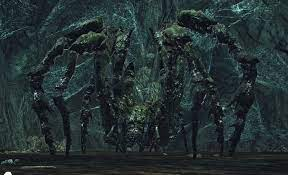

Este juego está vinculado cronológicamente con el anterior, en este eres un
viajero con la maldición de los no muertos, que los convierte en huecos, y
llegas a Drangleic una tierra devastada por la guerra entre humanos y gigantes
en busca de una cura para la maldición de los no muertos.
Como siempre para acabar el juego hay que hacerse con unas almas importantes,
estas almas son las de La Pecadora Perdida ubicada en la Loma de los Pecadores,
esta fue detenida por intentar enlazar la primera llama, fue detenida porque
Nashandra hija de Manus y reina de Drangleic prefería que perdurara la era de la
oscuridad, que es la era en la que la primera llama está apagada. El Podrido es
una masa de no muertos fusionada ubicado en el Desfiladero Negro. La Amada Freja
del Duque, esta es una araña gigante que controla al enjambre retorcido y por
último el Viejo Rey de Hierro que habita como jefe final en el torreón de hierro,
este nació como rey de hierro cuando un rey consiguió la torre de bruma en una
guerra y haciendo uso del cetro de hierro incandescente que había ubicado allí
se convierte en un demonio gigante, una vez derrotas a estos seres obtienes
acceso al torreón de Aldia y al Castillo de Drangleic.

Para continuar deberás ir al Santuario de Amana que está debajo del castillo de
Drangleic, y cuando pases Amana tendrás la cripta de los no muertos donde reside
lo que queda del rey Vendrick, pero para acceder donde él se encuentra deberás
pasar por Velstadt el Escudo Real, una vez lo derrotes entraras a una sala
donde el rey Vendrick ya en un estado de no muerto casi hueco por culpa de
la maldición que estas tierras conllevan, está dando vueltas de forma
indefinida, no es agresivo a no ser que entables combate con el, de
todas formas no es necesario matarlo, solo debes ir al fondo de la sala donde
están los restos de su armadura, y también el anillo del rey.
Con el anillo del rey podrás acceder al Torreón de Aldia desde donde puedes
llegar al santuario del Dragón donde deberás dialogar con el dragón antiguo
(o pegarte con él), y conseguir el hueso de dragón petrificado un objeto
usado para entrar en los recuerdos de los gigantes y derrotar el rey de
los gigantes consiguiendo su alma.
Con este anillo y habiendo derrotado al señor de los gigantes en el “pasado”
deberemos ir a la última puerta del en el Castillo de Drangleic para llegar al
Trono del querer donde si no hemos derrotado al rey de los gigantes solo
aparecerán el vigilante y el protector del trono pero si has derrotado al señor
de los gigantes aparecerá el verdadero jefe final Nashandra una hija de Manus
del DS1, que fue derrotado por el no muerto elegido, una vez hayas acabado con
Nashandra puedes elegir entre tres finales, los dos primeros consisten en ir
hasta el trono del querer lo que significa que aceptas tu destino en el ciclo de
la Llama y la enlazas para prolongar la era del fuego o la dejas morir para
convertirte en el señor de la oscuridad, el tercer final consiste en salir de la
sala abandonando el trono y dando por hecho que debe haber otra forma de acabar
con la maldición.
Los DLC tratan sobre las otras hijas de Manus, estas son consideradas hijas pero
en realidad son fragmentos de Manus, de cuando fue derrotado por el no muerto
elegido, el primer DLC es sobre Elana la reina escuálida, esta es la
representación de la ira de Manus, esta es un jefe importante del DLC, y Sinh el
dragón durmiente es el otro jefe importante del DLC, este despertó de su letargo
cuando unos caballeros sitiaron una ciudad, cuando el dragón despertó soltó una
nube tóxica que aniquiló a toda la aldea. En el segundo DLC como único jefe
obligatorio está el caballero del humo que posee el espadon del humo, una
espada colosal muy poderosa, este caballero sirvió al rey Vendrick durante
años pero lo condenaron por traidor y huyó hasta encontrarse con Nadalia, Novia
de Ceniza, la segunda hija de Manus en el Torreón de hierro a quién decidió
acompañar de por vida. Finalmente está el tercer DLC donde como jefes obligatorios
están Aava, mascota del rey que tenía la función de proteger a Alsanna, el Oráculo
callado que era otra hija de Manus representando los miedos de Manus. Y por último
el Rey de Marfil Quemado, este rey construyó una catedral llamada Eleum Loyce para
detener el avance de un antiguo caos reconocido como la llama del caos del
anterior juego, pero este terminó finalmente consumido por la llama y es a quien
enfrentaremos al final del DLC.